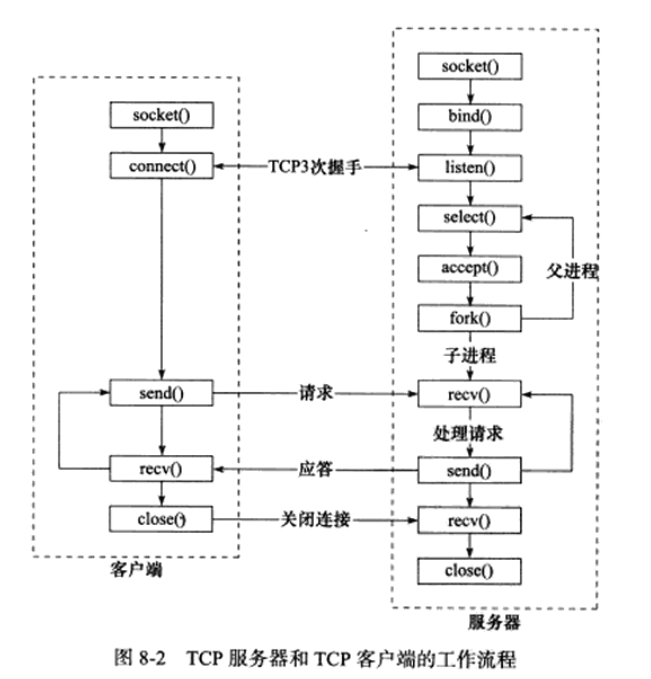
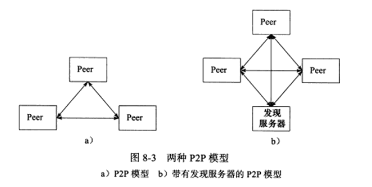
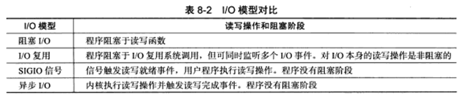

🌟 参考资料： Linux 高性能服务器编程 (游双著)
Linux 网络编程基础 API
Socket 地址 API
主机字节序和网络字节序
大端字节序：高位字节存放在低位地址，通常为网络字节序
小端字节序：高位字节存放在高位地址，通常为主机字节序
Linux 字节序转换函数
1 2 3 4 5 #include <netinet/in.h> uint32_t htonl (uint32_t hostlong) uint16_t htons (uint16_t hostshort) uint32_t ntohl (uint32_t netlong) uint16_t ntohs (uint16_t netshort)
通用 Socket 地址结构
1 2 3 4 struct sockaddr {sa_family_t sa_family; char sa_data[14 ];
以及更通用的 sockaddr_storage 结构体
1 2 3 4 5 struct sockaddr_storage {sa_family_t ss_family; unsigned long __ss_align; char __ss_padding[128 - sizeof (__ss_align)];
但上述结构体并不包含地址信息(还需要自行进行位操作)，因此 Linux 封装了更具体的结构体，如 sockaddr_in 和 sockaddr_in6
1 2 3 4 5 6 7 8 9 10 11 12 13 14 15 16 17 18 struct sockaddr_in {sa_family_t sin_family; in_port_t sin_port; struct in_addr sin_addr; char sin_zero[8 ]; struct addr_in {uint32_t s_addr; struct sockaddr_in6 {sa_family_t sin6_family; in_port_t sin6_port; uint32_t sin6_flowinfo; struct in6_addr sin6_addr; uint32_t sin6_scope_id;
协议族
AF_INET：IPv4
AF_INET6：IPv6
AF_UNIX：UNIX 域
AF_* 与 PF_* 宏可以互换使用
IP 地址转换函数
1 2 3 4 5 6 7 8 9 10 11 #include <arpa/inet.h> in_addr_t inet_addr (const char *str) int inet_aton (const char *str, struct in_addr *addr) const char *inet_ntoa (struct in_addr addr) int inet_pton (int af, const char *src, void *dst) const char *inet_ntop (int af, const void *src, char *dst, socklen_t size)
创建 Socket
1 2 3 4 5 6 7 #include <sys/types.h> #include <sys/socket.h> int socket (int domain, int type, int protocol)
命名 Socket
1 2 3 4 int bind (int sockfd, const struct sockaddr *addr, socklen_t addrlen)
通常为 TCP 服务器绑定地址和端口(Server 端) #### 监听 Socket 1 2 3 int listen (int sockfd, int backlog)
接受连接
名为 accept 接受连接，但实际其并不关心连接，只是从监听队列中取出一个连接
1 2 3 4 int accept (int sockfd, struct sockaddr *addr, socklen_t *addrlen)
连接 Socket
1 2 3 4 int connect (int sockfd, const struct sockaddr *addr, socklen_t addrlen)
通常为 TCP 客户端连接地址和端口(Client 端)
一旦连接成功，客户端和服务器端都可以通过读写 sockfd 进行通信
关闭 Socket
close 实际上是将 sockfd 的引用计数减 1，只有当引用计数为 0 时才会真正关闭套接字(多进程共享套接字时)
shutdown 可以立即关闭套接字
1 2 3 int shutdown (int sockfd, int how)
数据读写
TCP 读写
1 2 3 4 5 6 7 ssize_t recv (int sockfd, void *buf, size_t len, int flags) ssize_t send (int sockfd, const void *buf, size_t len, int flags)
UDP 读写
1 2 3 4 5 6 7 8 9 10 11 ssize_t recvfrom (int sockfd, void *buf, size_t len, int flags, struct sockaddr *src_addr, socklen_t *addrlen) ssize_t sendto (int sockfd, const void *buf, size_t len, int flags, const struct sockaddr *dest_addr, socklen_t addrlen)
通用读写
1 2 3 4 5 6 7 8 9 10 11 12 13 14 15 16 17 18 19 20 #include <sys/socket.h> ssize_t recvmsg (int sockfd, struct msghdr *msg, int flags) ssize_t sendmsg (int sockfd, const struct msghdr *msg, int flags) struct msghdr {void *msg_name; socklen_t msg_namelen; struct iovec *msg_iov; int msg_iovlen; void *msg_control; socklen_t msg_controllen; int msg_flags; struct iovec {void *iov_base; size_t iov_len;
带外数据
TCP 有一个带外数据标志，可以通过 MSG_OOB 标志来发送和接收带外数据(紧急数据)
1 int sockatmark (int sockfd)
地址信息函数
1 2 3 #include <sys/socket.h> int getsockname (int sockfd, struct sockaddr *addr, socklen_t *addrlen) int getpeername (int sockfd, struct sockaddr *addr, socklen_t *addrlen)
Socker 选项
1 2 3 4 5 6 7 8 #include <sys/socket.h> int getsockopt (int sockfd, int level, int optname, void *optval, socklen_t *optlen) int setsockopt (int sockfd, int level, int optname, const void *optval, socklen_t optlen)
SO_REUSEADDR TCP 服务器在关闭后，可能会有一段时间处于 TIME_WAIT 状态，此时再次启动服务器会导致 bind 失败，可以通过设置 SO_REUSEADDR 选项来强制绑定
SO_RCVBUF 和 SO_SNDBUF 设置接收和发送缓冲区大小
SO_RCVLOWAT 和 SO_SNDLOWAT 一般用于 io 复用相关 api 调用，设置接收和发送缓冲区低水位标记，当缓冲区中的数据量低于低水位标记时， select 和 poll 将返回可读或可写
SO_LINGER 设置关闭 socket 的行为，当设置 SO_LINGER 选项时，close 会阻塞直到所有数据发送完毕或超时
1 2 3 4 struct linger {int l_onoff; int l_linger;
网络信息函数
1 2 3 4 5 6 7 8 9 10 11 12 13 14 15 16 17 18 19 20 21 22 23 24 25 26 27 28 29 30 31 32 33 34 35 36 37 38 39 40 41 42 43 44 45 46 47 48 49 50 51 #include <sys/socket.h> struct hostent * gethostbyname (const char *name); struct hostent * gethostbyaddr (const char *addr, int len, int type); struct hostent {char *h_name; char **h_aliases; int h_addrtype; int h_length; char **h_addr_list; struct servent * getservbyname (const char *name, const char *proto); struct servent * getservbyport (int port, const char *proto); struct servent {char *s_name; char **s_aliases; int s_port; char *s_proto; int getaddrinfo (const char *node, const char *service, const struct addrinfo *hints, struct addrinfo **res) struct addrinfo {int ai_flags; int ai_family; int ai_socktype; int ai_protocol; socklen_t ai_addrlen; struct sockaddr *ai_addr; char *ai_canonname; struct addrinfo *ai_next; void freeaddrinfo (struct addrinfo *res) int getnameinfo (const struct sockaddr *addr, socklen_t addrlen, char *host, socklen_t hostlen, char *serv, socklen_t servlen, int flags)
高级 I/O 函数
主要分为三类： - 用于创建文件描述符的函数：pipe, dup, dup2... - 用于读写数据的函数:readv, writev, sendfile, mmap, munmap, splice, tee... - 用于控制 I/O 行为的函数：fcntl, ioctl, fcntl64...
pipe
1 2 3 4 5 6 int pipe (int pipefd[2 ]) int mkfifo (const char *pathname, mode_t mode)
dup 和 dup2
1 2 3 4 5 6 int dup (int oldfd) int dup2 (int oldfd, int newfd)
readv 和 writev
1 2 3 4 5 6 7 8 #include <sys/uio.h> ssize_t readv (int fd, const struct iovec *iov, int iovcnt) ssize_t writev (int fd, const struct iovec *iov, int iovcnt)
sendfile
1 2 3 4 5 6 7 #include <sys/sendfile.h> ssize_t sendfile (int out_fd, int in_fd, off_t *offset, size_t count)
mmap 和 munmap
1 2 3 4 5 6 7 8 9 10 11 12 13 #include <sys/mman.h> void *mmap (void *addr, size_t length, int prot, int flags, int fd, off_t offset) int munmap (void *addr, size_t length)
splice 和 tee
1 2 3 4 5 6 7 8 9 10 11 12 13 14 15 16 17 #include <fcntl.h> ssize_t splice (int fd_in, loff_t *off_in, int fd_out, loff_t *off_out, size_t len, unsigned int flags) ssize_t tee (int fd_in, int fd_out, size_t len, unsigned int flags)
fcntl
1 2 3 4 5 6 #include <fcntl.h> int fcntl (int fd, int cmd, ...)
Linux 服务器程序规范
日志
syslog
1 2 3 4 5 6 7 8 9 10 11 12 13 14 15 16 17 18 19 20 #include <syslog.h> void syslog (int priority, const char *format, ...) void openlog (const char *ident, int option, int facility) int setlogmask (int maskpri) void closelog ()
用户信息
UID, EUID, GID, EGID
1 2 3 4 5 6 7 8 9 10 #include <unistd.h> uid_t getuid () uid_t geteuid () gid_t getgid () gid_t getegid () void setuid (uid_t uid) void seteuid (uid_t euid) void setgid (gid_t gid) void setegid (gid_t egid)
切换用户
1 2 3 4 5 6 7 8 9 10 11 12 13 14 15 16 17 18 19 20 21 22 23 #include <unistd.h> static bool switch_to_user (uid_t user_id, gid_t gp_id) if ((user_id == 0 ) && (gp_id == 0 )) {return false ;gid_t gid = getgid ();uid_t uid = getuid ();if (((gid != 0 ) || (uid != 0 )) && ((gid != gp_id) || (uid != user_id))) {return false ;if ((uid != 0 ) && (uid == user_id)) {return true ;if (setgid (gp_id) < 0 || setuid (user_id) < 0 ) {return false ;return true ;
进程间关系
进程组
Linux 中每个进程都属于一个进程组，进程组中的首领进程是组长，进程组 ID 与进程 ID 相同
1 2 3 4 5 #include <unistd.h> pid_t getpgrp () pid_t getpgid (pid_t pid) int setpgid (pid_t pid, pid_t pgid)
会话
一些有关联的进程组可以组成一个会话
1 2 3 4 #include <unistd.h> pid_t setsid ()
ps 命令
1 2 3 ps -ef | grep xxx
系统资源限制
1 2 3 4 5 6 7 8 9 10 11 12 13 14 15 16 17 18 19 20 21 22 23 24 25 26 27 28 29 #include <sys/resource.h> int getrlimit (int resource, struct rlimit *rlim) int setrlimit (int resource, const struct rlimit *rlim) struct rlimit {rlim_t rlim_cur; rlim_t rlim_max;
改变工作目录和根目录
1 2 3 4 5 6 7 #include <unistd.h> char *getcwd (char *buf, size_t size) int chdir (const char *path) int chroot (const char *path)
服务器程序后台化(守护进程daemon)
1 2 3 4 5 6 7 8 9 10 11 12 13 14 15 16 17 18 19 20 21 22 23 24 25 26 27 28 29 30 31 32 #include <unistd.h> void daemonize () pid_t pid = fork();if (pid < 0 ) {exit (1 );else if (pid > 0 ) {exit (0 );setsid ();chdir ("/" );close (STDIN_FILENO);close (STDOUT_FILENO);close (STDERR_FILENO);open ("/dev/null" , O_RDONLY);open ("/dev/null" , O_RDWR);open ("/dev/null" , O_RDWR);int daemon (int nochdir, int noclose)
高性能服务器程序框架
主要分为三部分： - I/O 处理单元：包含四种 I/O 模型以及两种高效的事件处理模型 - 逻辑单元：包含两种高效的并发模型以及高效的逻辑处理方式 —— 有限状态机(FSM) - 存储单元：(略)
服务器模型
C/S 模型 (Client/Server)
服务器先创建多个 socket，然后监听端口，等待客户端连接 
P2P 模型 (Peer to Peer)
 #### 服务器编程框架
I/O 模块：等待并接受客户端连接，接收客户端数据(也可能在逻辑单元中，取决于事件处理模型)，实现负载均衡
逻辑单元：处理客户端请求，实现业务逻辑，通常是一个进程或者线程
存储单元：存储数据，通常是数据库服务器
请求队列：是各单元通信方式的抽象，是各服务器之间预先建立的、静态的、永久的 TCP 连接，通常被实现为池的一部分
I/O 模型
socket 默认是阻塞的，可以通过设置 O_NONBLOCK 选项来设置非阻塞，可能被阻塞的系统调用有： - accept - recv - send - connect
对于非阻塞的 socket，总是立即返回，可能返回 EAGAIN 或 EWOULDBLOCK 错误(非阻塞通常配合 IO 复用以及 SIGIO 信号使用) 
高效的事件处理模型
Reactor 模式
要求主线程(Reactor)负责且只负责监听文件描述符的事件，管理请求队列，除此之外，主线程不做任何实质性的工作，将读写的工作分配给工作线程(发出的是写就绪事件)
下面以同步 I/O 多路复用 epoll_wait 为例，实现 Reactor 模式框架
Proactor 模式
Proactor 模式要求主线程(Proactor)和内核负责处理所有的 I/O 事件，而工作线程只负责业务逻辑(发出的是写完成事件)
下面以异步 I/O aio_read, aio_write 为例，实现 Proactor 模式框架
高效的并发模型
半同步/半异步模型(Half Sync/Half Async)
在 I/O 模型中的同步与异步，是指 I/O 操作的同步与异步(以就绪事件还是完成事件以及谁来完成 I/O 读写为标准)，而在并发模型中的同步与异步不同，同步是指程序完全按照代码顺序执行，异步是指程序不按照代码顺序执行(需要系统事件触发驱动，如中断、信号等)
而半同步/半异步模型则是将同步和异步结合起来，异步线程负责 I/O 事件的处理并插入请求队列，同步线程负责业务逻辑的处理
如下是半同步/半反应堆模型的框架
领导者/追随者模型(Leader/Follower)
领导者/追随者模型是一种高效的并发模型，领导者负责监听文件描述符的事件，追随者负责处理业务逻辑，领导者和追随者之间通过线程池进行通信，二者之间可以相互切换，以实现负载均衡
有限状态机(FSM)
详情以及进一步拓展可以参考课程Formal Language and Automata
I/O 复用
select 系统调用
select API
1 2 3 4 5 6 7 8 9 10 11 12 13 14 15 16 17 18 19 20 21 22 23 24 25 26 27 28 #include <sys/select.h> int select (int nfds, fd_set *readfds, fd_set *writefds, fd_set *exceptfds, struct timeval *timeout) #include <typesizes.h> #define __FD_SETSIZE 1024 typedef long int __fd_mask;#define __NFDBITS (8 * (int)sizeof(__fd_mask)) typedef struct {FD_ZERO (fd_set *fdset); FD_SET (int fd, fd_set *fdset); FD_CLR (int fd, fd_set *fdset); FD_ISSET (int fd, fd_set *fdset); struct timeval {long tv_sec; long tv_usec;
poll 系统调用
poll 与 select 类似，也是在指定时间内轮询一组文件描述符，以检测是否有就绪事件发生
poll 与 select 的区别：
poll 没有文件描述符数量限制
poll 通过 pollfd 结构体传递文件描述符，而不是通过 fd_set
poll 通过事件类型来判断文件描述符是否就绪，而不是通过位图
poll 通过 pollfd 结构体的 revents 成员来判断文件描述符是否就绪，而不是通过返回值
1 2 3 4 5 6 7 8 9 10 11 12 13 14 15 16 17 18 19 20 21 22 23 24 25 #include <poll.h> int poll (struct pollfd *fds, nfds_t nfds, int timeout) struct pollfd {int fd; short events; short revents;
epoll 系统调用
内核事件表
1 2 3 4 5 6 7 8 9 10 11 12 13 14 15 16 17 18 19 20 21 22 23 #include <sys/epoll.h> int epoll_create (int size) int epoll_ctl (int epfd, int op, int fd, struct epoll_event *event) struct epoll_event {uint32_t events; epoll_data_t data; typedef union epoll_data {void *ptr;int fd;uint32_t u32;uint64_t u64;epoll_data_t ;
epoll_wait API
1 2 3 4 5 6 7 #include <sys/epoll.h> int epoll_wait (int epfd, struct epoll_event *events, int maxevents, int timeout)
LT 模式和 ET 模式
epoll 默认启用 LT 模式，当向内核事件表注册 EPOLLET 事件时，启用 ET 模式(边缘触发模式)
1 events.events = EPOLLIN | EPOLLET;
EPOLLONESHOT
epoll 默认不启用 EPOLLONESHOT 事件，当向内核事件表注册 EPOLLONESHOT 事件时，表示只触发一次，需要重新注册
1 events.events = EPOLLIN | EPOLLONESHOT;
select, poll, epoll 性能比较
信号
Linux 信号概述
发送信号
1 2 3 4 5 6 7 8 #include <signal.h> int kill (pid_t pid, int sig)
kill 的 errno 如下：EPERM: 权限不足
ESRCH: 进程不存在
EINVAL: 信号不合法
信号处理方式
1 2 3 4 #include <signal.h> typedef void (*sighandler_t ) (int )
Linux 信号
SIGHUP
POSIX
Term
终端挂起或控制进程终止
SIGINT
ANSI
Term
中断信号
SIGQUIT
POSIX
Core
退出信号
SIGILL
ANSI
Core
非法指令
SIGTRAP
POSIX
Core
跟踪/断点陷阱
SIGABRT
ANSI
Core
异常终止
SIGIOT
4.2BSD
Core
IOT 指令
SIGBUS
4.2BSD
Core
总线错误
SIGFPE
ANSI
Core
浮点异常
SIGKILL
POSIX
Term
强制终止
SIGUSR1
POSIX
Term
用户自定义信号 1
SIGSEGV
ANSI
Core
段错误
SIGUSR2
POSIX
Term
用户自定义信号 2
SIGPIPE
POSIX
Term
管道破裂
SIGALRM
POSIX
Term
闹钟信号
SIGTERM
ANSI
Term
终止信号
SIGSTKFLT
Linux
Term
协处理器栈错误
SIGCHLD
POSIX
Ign
子进程状态改变
SIGCONT
POSIX
Cont
继续执行
SIGSTOP
POSIX
Stop
停止进程
SIGTSTP
POSIX
Stop
终端停止信号
SIGTTIN
POSIX
Stop
后台进程请求输入
SIGTTOU
POSIX
Stop
后台进程请求输出
SIGURG
4.2BSD
Ign
紧急条件
SIGXCPU
4.2BSD
Core
超过 CPU 时间限制
SIGXFSZ
4.2BSD
Core
超过文件大小限制
SIGVTALRM
4.2BSD
Term
虚拟时钟信号
SIGPROF
4.2BSD
Term
专用时钟信号
SIGWINCH
4.3BSD
Ign
窗口大小改变
SIGIO
4.2BSD
Term
I/O 可用
SIGPWR
System V
Term
电源故障
SIGSYS
4.2BSD
Core
非法系统调用
SIGRTMIN
Linux
Term
实时信号的最小值
SIGRTMAX
Linux
Term
实时信号的最大值
SIGUNUSED
Linux
Term
保留未使用
但目前网络编程主要关注的信号有 SIGHUP, SIGURG, SIGPIPE, SIGALRM, SIGCHID
信号函数
signal 系统调用
1 2 3 4 5 6 #include <signal.h> _sighandler_t signal (int signum, _sighandler_t handler) typedef void (*_sighandler_t ) (int )
sigaction 系统调用
1 2 3 4 5 6 7 8 9 10 11 12 13 14 15 16 17 18 19 20 21 22 23 24 25 26 #include <signal.h> int sigaction (int signum, const struct sigaction *act, struct sigaction *oldact) struct sigaction {void (*sa_handler)(int ); void (*sa_sigaction)(int , siginfo_t *, void *); sigset_t sa_mask; int sa_flags; struct siginfo_t {int si_signo; int si_errno; int si_code; pid_t si_pid; uid_t si_uid; int si_status; void *si_addr; int si_band; int si_fd;
信号集
信号集函数
1 2 3 4 5 6 7 8 9 10 11 12 13 #include <bits/sigset.h> #include <signal.h> #define SIGSET_NWORDS (1024 / (8 * sizeof(unsigned long int))) typedef struct {unsigned long int __val[SIGSET_NWORDS];sigset_t ;int sigemptyset (sigset_t *set) int sigfillset (sigset_t *set) int sigaddset (sigset_t *set, int signum) int sigdelset (sigset_t *set, int signum) int sigismember (const sigset_t *set, int signum)
信号掩码
1 2 3 4 5 6 7 8 #include <signal.h> int sigprocmask (int how, const sigset_t *set, sigset_t *oldset)
被挂起的信号
1 2 3 #include <signal.h> int sigpending (sigset_t *set)
统一事件源
统一事件源是指直接在主循环中统一处理信号和 I/O 事件，主要有两种方式： - 信号处理函数中使用管道通知主循环 - 信号处理函数中使用信号量通知主循环
定时器
socket 选项 SO_RCVTIMEO 和 SO_SNDTIMEO
1 2 3 4 5 6 7 8 9 10 11 12 13 14 15 16 17 18 19 20 21 22 23 24 25 26 27 28 29 30 31 32 33 #include <sys/socket.h> int timeout_connect (const char *ip, int port, int time) struct sockaddr_in address;bzero (&address, sizeof (address));inet_pton (AF_INET, ip, &address.sin_addr);htons (port);int sockfd = socket (PF_INET, SOCK_STREAM, 0 );struct timeval timeout;0 ;socklen_t len = sizeof (timeout);int ret = setsockopt (sockfd, SOL_SOCKET, SO_SNDTIMEO,, &timeout, len);assert (ret != -1 );connect (sockfd, (struct sockaddr *)&address, sizeof (address));if (ret == -1 ) {if (errno == EINPROGRESS) {printf ("connecting timeout, process timeout logic\n" );return -1 ;printf ("error occur when connecting to server\n" );return -1 ;return sockfd;
时间轮定时器
1 2 3 4 5 6 7 8 9 10 11 12 13 14 15 16 17 18 19 20 21 22 23 24 25 26 27 28 29 30 31 32 33 34 35 36 37 38 39 40 41 42 43 44 45 46 47 48 49 50 51 52 53 54 55 56 57 58 59 60 61 62 63 64 65 66 67 68 69 70 71 72 73 74 75 76 77 78 79 80 81 82 83 84 85 86 87 88 89 90 91 92 93 94 95 96 97 98 99 100 101 102 103 104 105 106 107 108 109 110 111 112 113 114 115 116 117 118 119 120 121 122 123 124 125 126 127 128 129 130 131 132 133 134 135 136 137 138 139 140 141 142 143 144 145 146 147 148 149 150 151 152 153 154 155 156 157 158 159 160 161 162 163 164 165 166 167 168 169 170 171 172 173 174 175 176 177 #include <time.h> #include <sys/socket.h> #include <netinet/in.h> #define BUFFER_SIZE 64 #define FD_LIMIT 65535 #define MAX_EVENT_NUMBER 1024 #define TIMESLOT 5 static int pipefd[2 ];static sort timer_lst;static int epollfd = 0 ;int setnonblocking (int fd) int old_option = fcntl (fd, F_GETFL);int new_option = old_option | O_NONBLOCK;fcntl (fd, F_SETFL, new_option);return old_option;void addfd (int epollfd, int fd) epoll_ctl (epollfd, EPOLL_CTL_ADD, fd, &event);setnonblocking (fd);void sig_handler (int sig) int save_errno = errno;int msg = sig;send (pipefd[1 ], (char *)&msg, 1 , 0 );void addsig (int sig) struct sigaction sa;memset (&sa, '\0' , sizeof (sa));sigfillset (&sa.sa_mask);assert (sigaction (sig, &sa, NULL ) != -1 );void timer_handler () tick ();alarm (TIMESLOT);void cb_func (client_data *user_data) epoll_ctl (epollfd, EPOLL_CTL_DEL, user_data->sockfd, 0 );assert (user_data);close (user_data->sockfd);printf ("close fd %d\n" , user_data->sockfd);int main (int argc, char *argv[]) int port = atoi (argv[1 ]);int listenfd = socket (PF_INET, SOCK_STREAM, 0 );assert (listenfd >= 0 );struct sockaddr_in address;bzero (&address, sizeof (address));htonl (INADDR_ANY);htons (port);int ret = bind (listenfd, (struct sockaddr *)&address, sizeof (address));assert (ret != -1 );listen (listenfd, 5 );assert (ret != -1 );epoll_create (5 );assert (epollfd != -1 );addfd (epollfd, listenfd);socketpair (PF_UNIX, SOCK_STREAM, 0 , pipefd);assert (ret != -1 );setnonblocking (pipefd[1 ]);addfd (epollfd, pipefd[0 ]);addsig (SIGALRM);addsig (SIGTERM);new client_data[FD_LIMIT];bool stop_server = false ;bool timeout = false ;alarm (TIMESLOT);while (!stop_server) {int number = epoll_wait (epollfd, events, MAX_EVENT_NUMBER, -1 );if ((number < 0 ) && (errno != EINTR)) {printf ("epoll failure\n" );break ;for (int i = 0 ; i < number; i++) {int sockfd = events[i].data.fd;if (sockfd == listenfd) {struct sockaddr_in client_address;socklen_t client_addrlength = sizeof (client_address);int connfd = accept (listenfd, (struct sockaddr *)&client_address, &client_addrlength);addfd (epollfd, connfd);new heap_timer (3 * TIMESLOT);add_timer (timer);else if ((sockfd == pipefd[0 ]) && (events[i].events & EPOLLIN)) {int sig;char signals[1024 ];recv (pipefd[0 ], signals, sizeof (signals), 0 );if (ret == -1 ) {continue ;else if (ret == 0 ) {continue ;else {for (int i = 0 ; i < ret; i++) {switch (signals[i]) {case SIGALRM:true ;break ;case SIGTERM:true ;else if (events[i].events & EPOLLIN) {memset (users[sockfd].buf, '\0' , BUFFER_SIZE);recv (sockfd, users[sockfd].buf, BUFFER_SIZE - 1 , 0 );printf ("get %d bytes of client data %s from %d\n" , ret, users[sockfd].buf, sockfd);if (ret < 0 ) {if (errno != EAGAIN) {cb_func (&users[sockfd]);if (timer) {del_timer (timer);else if (ret == 0 ) {cb_func (&users[sockfd]);if (timer) {del_timer (timer);else {if (timer) {time_t cur = time (NULL );3 * TIMESLOT;printf ("adjust timer once\n" );adjust_timer (timer);else {if (timeout) {timer_handler ();false ;close (listenfd);close (pipefd[1 ]);close (pipefd[0 ]);delete [] users;return 0 ;
时间堆
1 2 3 4 5 6 7 8 9 10 11 12 13 14 15 16 17 18 19 20 21 22 23 24 25 26 27 28 29 30 31 32 33 34 35 36 37 38 39 40 41 42 43 44 45 46 47 48 49 50 51 52 53 54 55 56 57 58 59 60 61 62 63 64 65 66 67 68 69 70 71 72 73 74 75 76 77 78 79 80 81 82 83 84 85 86 87 88 89 90 91 92 93 94 95 96 97 98 99 100 101 102 103 104 105 106 107 108 109 110 111 112 113 114 115 116 117 118 119 120 121 122 123 124 125 126 127 128 129 130 131 132 133 134 135 136 137 138 139 140 141 142 143 144 145 146 147 148 149 150 151 152 153 154 155 156 157 158 159 160 161 162 163 164 165 166 167 168 169 170 171 172 173 174 175 176 177 178 179 180 181 182 183 184 185 186 187 188 189 190 191 192 193 194 195 196 197 198 199 200 201 202 203 204 205 206 207 208 209 210 211 212 213 214 215 216 217 218 219 220 221 222 223 224 225 226 227 228 229 230 231 232 233 234 235 236 237 238 239 240 241 242 243 244 245 246 247 248 249 250 251 252 253 254 255 256 257 258 259 260 261 262 263 264 265 266 267 268 269 270 271 272 273 274 275 276 #include <time.h> #include <netinet/in.h> #include <stdio.h> #include <string.h> #include <assert.h> #include <stdlib.h> #include <errno.h> #define BUFFER_SIZE 64 #define FD_LIMIT 65535 #define MAX_EVENT_NUMBER 1024 #define TIMESLOT 5 class heap_timer ;struct client_data {int sockfd;char buf[BUFFER_SIZE];class heap_timer {public :heap_timer (int delay) {time (NULL ) + delay;public :time_t expire;void (*cb_func)(client_data *);class time_heap {public :time_heap (int cap) : capacity (cap), cur_size (0 ) {new heap_timer*[capacity];if (!array) {perror ("new error" );exit (1 );for (int i = 0 ; i < capacity; i++) {NULL ;time_heap (heap_timer **init_array, int size, int capacity) : cur_size (size), capacity (capacity) {if (capacity < size) {perror ("capacity error" );exit (1 );new heap_timer*[capacity];if (!array) {perror ("new error" );exit (1 );for (int i = 0 ; i < capacity; i++) {NULL ;if (size != 0 ) {for (int i = 0 ; i < size; i++) {for (int i = (cur_size - 1 ) / 2 ; i >= 0 ; i--) {percolate_down (i);time_heap () {for (int i = 0 ; i < cur_size; i++) {delete array[i];delete [] array;public :void add_timer (heap_timer *timer) if (!timer) {return ;if (cur_size >= capacity) {resize ();int hole = cur_size++;int parent = 0 ;for (; hole > 0 ; hole = parent) {1 ) / 2 ;if (array[parent]->expire <= timer->expire) {break ;void del_timer (heap_timer *timer) if (!timer) {return ;NULL ;heap_timer *top () const {if (empty ()) {return NULL ;return array[0 ];void pop_timer () if (empty ()) {return ;if (array[0 ]) {delete array[0 ];0 ] = array[--cur_size];percolate_down (0 );void tick () 0 ];time_t cur = time (NULL );while (!empty ()) {if (!tmp) {break ;if (tmp->expire > cur) {break ;if (array[0 ]->cb_func) {0 ]->cb_func (array[0 ]->user_data);pop_timer ();0 ];bool empty () const return cur_size == 0 ;private :void percolate_down (int hole) int child = 0 ;for (; ((hole * 2 + 1 ) <= (cur_size - 1 )); hole = child) {2 + 1 ;if ((child < (cur_size - 1 )) && (array[child + 1 ]->expire < array[child]->expire)) {if (array[child]->expire < temp->expire) {else {break ;void resize () new heap_timer*[2 * capacity];for (int i = 0 ; i < 2 * capacity; i++) {NULL ;if (!temp) {perror ("new error" );exit (1 );2 * capacity;for (int i = 0 ; i < cur_size; i++) {delete [] array;private :int capacity;int cur_size;void cb_func (client_data *user_data) epoll_ctl (epollfd, EPOLL_CTL_DEL, user_data->sockfd, 0 );assert (user_data);close (user_data->sockfd);printf ("close fd %d\n" , user_data->sockfd);int main (int argc, char *argv[]) int port = atoi (argv[1 ]);int listenfd = socket (PF_INET, SOCK_STREAM, 0 );assert (listenfd >= 0 );struct sockaddr_in address;bzero (&address, sizeof (address));htonl (INADDR_ANY);htons (port);int ret = bind (listenfd, (struct sockaddr *)&address, sizeof (address));assert (ret != -1 );listen (listenfd, 5 );assert (ret != -1 );time_heap timer_lst (60 ) ;int epollfd = epoll_create (5 );assert (epollfd != -1 );addfd (epollfd, listenfd);while (1 ) {int number = epoll_wait (epollfd, events, MAX_EVENT_NUMBER, -1 );if ((number < 0 ) && (errno != EINTR)) {printf ("epoll failure\n" );break ;for (int i = 0 ; i < number; i++) {int sockfd = events[i].data.fd;if (sockfd == listenfd) {struct sockaddr_in client_address;socklen_t client_addrlength = sizeof (client_address);int connfd = accept (listenfd, (struct sockaddr *)&client_address, &client_addrlength);addfd (epollfd, connfd);new client_data;new heap_timer (3 * TIMESLOT);add_timer (timer);else if (events[i].events & EPOLLIN) {memset (users[sockfd].buf, '\0' , BUFFER_SIZE);recv (sockfd, users[sockfd].buf, BUFFER_SIZE - 1 , 0 );printf ("get %d bytes of client data %s from %d\n" , ret, users[sockfd].buf, sockfd);if (ret < 0 ) {if (errno != EAGAIN) {cb_func (&users[sockfd]);if (timer) {del_timer (timer);else if (ret == 0 ) {cb_func (&users[sockfd]);if (timer) {del_timer (timer);else {if (timer) {time_t cur = time (NULL );3 * TIMESLOT;printf ("adjust timer once\n" );adjust_timer (timer);else {tick ();close (listenfd);return 0 ;
高性能 I/O 框架库 Libevent
libevent.org
事件多路分发器 Event Demultiplexer